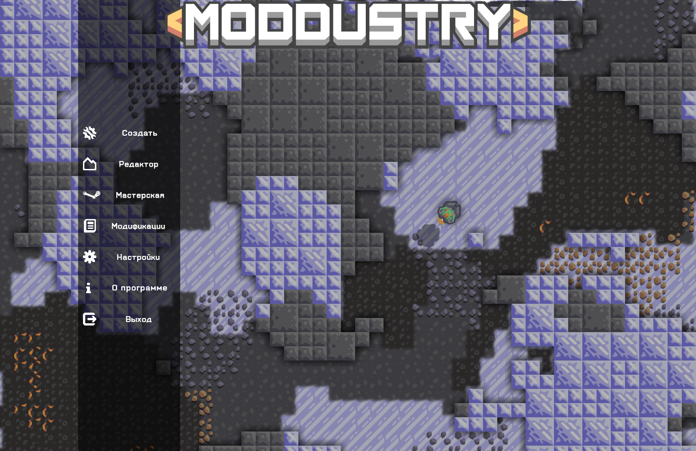

Moddustry - программа, предназначеная для быстрой и безошибочной разработки модификаций для игры Mindustry. Хорошее описание я до конца ещё не придумал, поэтому сейчас здесь будет случайный текст: В некотором царстве , в некотором государстве жил-был слесарь Петя. Он был не слишком красив, но вежлив. Именно поэтому он смог добиться во дворе относительной независимости. Впрочем, независимости от чего – Петя точно не знал. Так он жил день за днём, пока ему не позвонил новый начальник.
- Петя, - сказал начальник, - нам нужны люди. Есть у тебя опыт?
- Нет. - ответил Петя.
- А время сколько? - спросил начальник. Петя посмотрел на часы. Было девять тридцать три.
- Шесть пятьдесят два, -воскликнул Петя, - без четырёх.
- А куда это нам нужны люди? - спросил начальник. Петя повторил этот вопрос громко и чётко, как учат в школе. Тогда начальник положил трубку.
- Отлично! - крикнул Петя и прыгнул в окно.

Скачать
Здесь вы можете бесплатно скачать Moddustry
Журнал разработки
Штирлиц решил разыграть Мюллера:
- А вы знаете, что я русский шпион?
- Нет, не знаю, - в свою очередь разыграл Мюллер Штирлица
Один мальчик любил иностранные мемы.
Он спросил у родителей, что значит LMAO. Родители пообещали ему рассказать об этом на его 14-летие.
Ему исполнилось 14. И он опять подошёл и спросил у родителей, что такое lmao. Родители пообещали рассказать ему об этом когда ему будет 18 лет.
В 18 лет он спросил снова и родители рассказали ему, что есть один остров на котором растет пальма, а под этой пальмой зарыт сундук.
Парень долго копил денег и всё таки приехал на этот остров. Нашёл пальму, откопал сундук, в котором лежал листок бумаги. Парень взял его, прочитал
Купил мужик шляпу
А она ему как раз